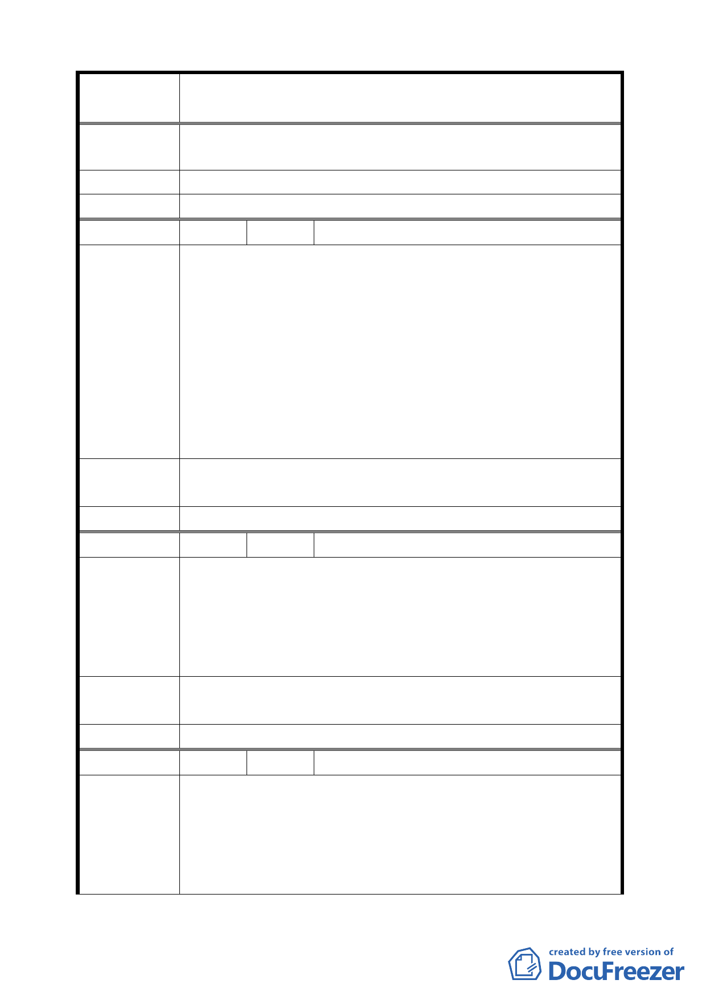

案
名
變更臺北市士林區至善段五小段 80、81、117 地號等加油站
用地為公園用地細部計畫案
陳 情 理 由 贊成蓋公園。
建 議 辦 法 美化環境方式。
委 員 會 決 議 同編號 2。
編 號 43 陳情人 曹綉玲
1.車輛加油迴旋腹地大，此地恰逢自強隧道出口和公車站
牌，易造成阻塞和發生交通事故。
2.公有地釋出外租未曾經環評和舉辦說明會，市民權益明顯
遭惡意出賣有官商勾結之嫌，此風不可長。
陳 情 理 由 3.至德園優雅樣貌已遭開發商粗暴更動和河川流向。破壞美
感事小，已嚴重威脅居民安全。
4.值此全球致力於環保和減碳運動之刻，再造加油站（目前
也不缺）將成為笑柄。
5.破壞國寶級博物院環境有傷國際聲望。
建議辦法
1.收回已出租之公有地。
2.回復雅緻優美綠地，與志德園連成一片造福群眾。
委 員 會 決 議 同編號 2。
編 號 44 陳情人 葉恒青
1.該地段不適加油站，因處在隧道口和公車站旁，人擠車擠
易生事故。
陳 情 理 由 2.至德園部分風貌遭開發商嚴重破壞且河川流向也經任意改
道，違反環保也損故宮和市民生命權益。
3.值此全球力求減碳運動之際，設加油站正是反其道而行。
建議辦法
1.收回已出租之公有地，造成錯誤之單位該負起責任。
2.回復至德園優雅風貌，造福群眾。
委 員 會 決 議 同編號 2。
編 號 45 陳情人 葉頌壽
此區土地不宜設加油站之理由：
1.如設加油站易造成此區車輛壅塞，尤其假日更易堵塞。
陳 情 理 由 2.此區有溪流經過，設加油站易造成溪水汙染、河川堵塞妨
害環保。
3.故宮博物院近在咫尺，加油站之油湮易造成空氣汙染，有
48